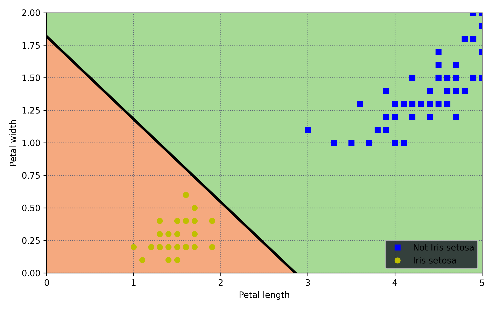
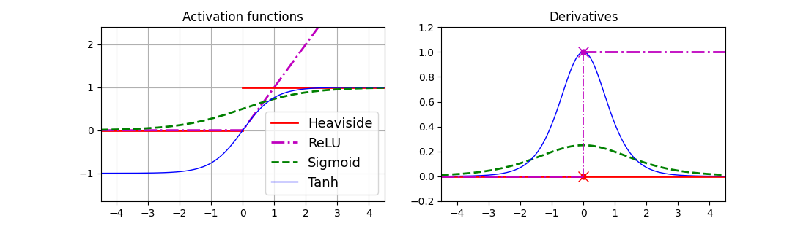

Code for Machine Learning and Data Science II Introduction to Artifical Neural Networks
Table of Contents
These are the code snippets used in Introduction to Artifical Neural Networks
part of Machine Learning and Data Science II.
Introduction
This part focuses on the fundamental programming knowledge of ANNs
Preliminary Setup
We first must check the version you have installed on your computer.
import sys assert sys.version_info >= (3, 7)
The assert keyword is used when debugging code. The assert keyword lets you test if a condition in your code returns True, if not, the program will raise an AssertionError.
It also requires Scikit-Learn ≥ 1.0.1:
from packaging import version import sklearn assert version.parse(sklearn.__version__) >= version.parse("1.0.1")
And TensorFlow ≥ 2.8:
import tensorflow as tf assert version.parse(tf.__version__) >= version.parse("2.8.0")
In addition, make sure your matplotlib is configured to produce high
quality images.
# import for custom color cycling from cycler import cycler # define custom default colors for generating image with # consisten color cycling new_colors = ['#326199', '#4fb1a1', '#fcc055', '#eb8d50', '#df6e5b', '#9a031e', '#984ea3'] # define a function to store matplotlib style information def plot_settings(style, size=None): # define the styles for generating web compatible images. if style == "web": style = { 'axes.edgecolor': '1e1e2e', 'axes.facecolor': '363a4f', 'axes.axisbelow' : True, 'axes.labelcolor' : 'cad3f5', 'axes.grid': True, 'axes.grid.which': 'both', 'axes.spines.left': False, 'axes.spines.right': False, 'axes.spines.top': False, 'axes.spines.bottom': False, 'axes.prop_cycle': cycler(color=new_colors), 'grid.color': '5b6078', 'grid.linewidth': '0.6', 'grid.linestyle': ":", 'xtick.color': 'cad3f5', 'xtick.major.bottom': True, 'xtick.labelsize': 10, 'xtick.minor.bottom': True, 'xtick.minor.visible': True, 'xtick.minor.width': 0.5, 'ytick.color': 'cad3f5', 'ytick.major.left': True, 'ytick.minor.left': True, 'ytick.minor.visible': True, 'ytick.labelsize': 10, 'savefig.facecolor': '363a4f', 'text.color': 'cad3f5', 'lines.linewidth': 4, 'lines.markersize': 10, 'font.size': 16, 'legend.fancybox' : False, 'legend.facecolor' : '6c7086', 'figure.facecolor': '838ba7', } # Define the font dictionary to store label formatting font = {'color': '#cad3f5', 'weight': 'normal', 'size': 16, } elif style == "slide": style = { 'axes.edgecolor': 'f0f0f0', 'axes.facecolor': 'fafafa', 'axes.axisbelow' : True, 'axes.labelcolor' : '1e1e1e', 'axes.grid': True, 'axes.grid.which': 'both', 'axes.spines.left': False, 'axes.spines.right': False, 'axes.spines.top': False, 'axes.spines.bottom': False, 'axes.prop_cycle': cycler(color=new_colors), 'grid.color': 'f0f0f0', 'grid.linewidth': '0.6', 'grid.linestyle': "dashed", 'xtick.color': '1e1e1e', 'xtick.major.bottom': True, 'xtick.labelsize': 10, 'xtick.minor.bottom': True, 'xtick.minor.visible': True, 'xtick.minor.width': 0.5, 'ytick.color': '1e1e1e', 'ytick.major.left': True, 'ytick.minor.left': False, 'ytick.labelsize': 10, 'savefig.facecolor': 'fafafa', 'text.color': '1e1e1e', 'lines.linewidth': 4, 'lines.markersize': 10, 'font.size': 16, 'legend.fancybox' : False, 'legend.facecolor' : '6c7086', 'figure.facecolor': 'fafafa', } # Define the font dictionary to store label formatting font = {'color': '#1e1e1e', 'weight': 'normal', 'size': 16, } # Apply style sheet for use in matplotlib plt.rcParams.update(style) # Define figure size based on the number of figures if size == 1: plt.figure(figsize = (10, 6)) elif size == 2: plt.figure(figsize = (12, 5)) elif size == 3: plt.figure(figsize = (12, 8)) elif size == None: return 0 def grid_settings(style): if style == "web": plt.grid(which='minor', color='#5b6078', linestyle=':', linewidth=0.5) plt.grid(which='major', color='#5b6078', linestyle=':', linewidth=0.8) elif style == "slide": plt.grid(which='minor', color='#c8c8c8', linestyle=':', linewidth=0.5) plt.grid(which='major', color='#c8c8c8', linestyle=':', linewidth=0.8) plt.minorticks_on()
from pathlib import Path # Define paths to store images IMAGES_PATH = Path() / "images" / "Introduction-to-Artificial-Neural-Networks" # Check if path exists IMAGES_PATH.mkdir(parents=True, exist_ok=True) def store_fig(fig_id, tight_layout=True, fig_extension="png", resolution=300, style=None, close=None): if tight_layout: plt.tight_layout() if style == "web": plt.grid(which='minor', color='#5b6078', linestyle=':', linewidth=0.5) plt.grid(which='major', color='#5b6078', linestyle=':', linewidth=0.8) fig_extension = "png" elif style == 'slide': grid_settings(style = "slide") fig_extension = "pdf" path = IMAGES_PATH / f"{fig_id}.{fig_extension}" plt.savefig(path, format=fig_extension, dpi=resolution) if close: plt.close()
From Biological to Artificial Neurons
the perceptron (or McCulloch–Pitts neuron) is an algorithm for supervised learning of binary classifiers. A binary classifier is a function which can decide whether or not an input, represented by a vector of numbers, belongs to some specific class.[1] It is a type of linear classifier, i.e. a classification algorithm that makes its predictions based on a linear predictor function combining a set of weights with the feature vector.
The Perceptron
import numpy as np from sklearn.datasets import load_iris from sklearn.linear_model import Perceptron iris = load_iris(as_frame=True) X = iris.data[["petal length (cm)", "petal width (cm)"]].values y = (iris.target == 0) # Iris setosa per_clf = Perceptron(random_state=42) per_clf.fit(X, y) X_new = [[2, 0.5], [3, 1]] y_pred = per_clf.predict(X_new) # predicts True and False for these 2 flowers
Let's check the prediction of the model
print(y_pred)
[ True False]
NOTE: The Perceptron is equivalent to a SGDClassifier
with loss="perceptron", no regularization, and a constant learning
rate equal to 1:
# extra code – shows how to build and train a Perceptron from sklearn.linear_model import SGDClassifier sgd_clf = SGDClassifier(loss="perceptron", penalty=None, learning_rate="constant", eta0=1, random_state=42) sgd_clf.fit(X, y) assert (sgd_clf.coef_ == per_clf.coef_).all() assert (sgd_clf.intercept_ == per_clf.intercept_).all()
It is important to mention, when the Perceptron finds a decision boundary that properly separates the classes, it stops learning.
This means that the decision boundary is often quite close to one class:
# extra code – plots the decision boundary of a Perceptron on the iris dataset import matplotlib.pyplot as plt from matplotlib.colors import ListedColormap a = -per_clf.coef_[0, 0] / per_clf.coef_[0, 1] b = -per_clf.intercept_ / per_clf.coef_[0, 1] axes = [0, 5, 0, 2] x0, x1 = np.meshgrid( np.linspace(axes[0], axes[1], 500).reshape(-1, 1), np.linspace(axes[2], axes[3], 200).reshape(-1, 1), ) X_new = np.c_[x0.ravel(), x1.ravel()] y_predict = per_clf.predict(X_new) zz = y_predict.reshape(x0.shape) custom_cmap = ListedColormap(['#a6da95', '#f5a97f']) plt.figure(figsize=(8, 5)) plt.plot(X[y == 0, 0], X[y == 0, 1], "bs", label="Not Iris setosa") plt.plot(X[y == 1, 0], X[y == 1, 1], "yo", label="Iris setosa") plt.plot([axes[0], axes[1]], [a * axes[0] + b, a * axes[1] + b], "k-", linewidth=3) plt.contourf(x0, x1, zz, cmap=custom_cmap) plt.xlabel("Petal length") plt.ylabel("Petal width") plt.legend(facecolor='#181926', loc="lower right") plt.axis(axes) store_fig("perceptron-decision", style = "web", close = True)

Types of Activation Functions
from scipy.special import expit as sigmoid def relu(z): return np.maximum(0, z) def derivative(f, z, eps=0.000001): return (f(z + eps) - f(z - eps))/(2 * eps) max_z = 4.5 z = np.linspace(-max_z, max_z, 200) plt.figure(figsize=(11, 3.1)) plt.subplot(121) plt.plot([-max_z, 0], [0, 0], "r-", linewidth=2, label="Heaviside") plt.plot(z, relu(z), "m-.", linewidth=2, label="ReLU") plt.plot([0, 0], [0, 1], "r-", linewidth=0.5) plt.plot([0, max_z], [1, 1], "r-", linewidth=2) plt.plot(z, sigmoid(z), "g--", linewidth=2, label="Sigmoid") plt.plot(z, np.tanh(z), "b-", linewidth=1, label="Tanh") plt.grid(True) plt.title("Activation functions") plt.axis([-max_z, max_z, -1.65, 2.4]) plt.gca().set_yticks([-1, 0, 1, 2]) plt.legend(loc="lower right", fontsize=13) plt.subplot(122) plt.plot(z, derivative(np.sign, z), "r-", linewidth=2, label="Heaviside") plt.plot(0, 0, "ro", markersize=5) plt.plot(0, 0, "rx", markersize=10) plt.plot(z, derivative(sigmoid, z), "g--", linewidth=2, label="Sigmoid") plt.plot(z, derivative(np.tanh, z), "b-", linewidth=1, label="Tanh") plt.plot([-max_z, 0], [0, 0], "m-.", linewidth=2) plt.plot([0, max_z], [1, 1], "m-.", linewidth=2) plt.plot([0, 0], [0, 1], "m-.", linewidth=1.2) plt.plot(0, 1, "mo", markersize=5) plt.plot(0, 1, "mx", markersize=10) plt.title("Derivatives") plt.axis([-max_z, max_z, -0.2, 1.2]) plt.savefig("images/ANNs/activation-functions-plot.png")

Regression MLPs
from sklearn.datasets import fetch_california_housing from sklearn.metrics import mean_squared_error from sklearn.model_selection import train_test_split from sklearn.neural_network import MLPRegressor from sklearn.pipeline import make_pipeline from sklearn.preprocessing import StandardScaler housing = fetch_california_housing() X_train_full, X_test, y_train_full, y_test = train_test_split( housing.data, housing.target, random_state=42) X_train, X_valid, y_train, y_valid = train_test_split( X_train_full, y_train_full, random_state=42) mlp_reg = MLPRegressor(hidden_layer_sizes=[50, 50, 50], random_state=42) pipeline = make_pipeline(StandardScaler(), mlp_reg) pipeline.fit(X_train, y_train) y_pred = pipeline.predict(X_valid) rmse = mean_squared_error(y_valid, y_pred, squared=False)
print(rmse)
0.5053326657968588
Classification MLPs
from sklearn.datasets import load_iris from sklearn.model_selection import train_test_split from sklearn.neural_network import MLPClassifier iris = load_iris() X_train_full, X_test, y_train_full, y_test = train_test_split( iris.data, iris.target, test_size=0.1, random_state=42) X_train, X_valid, y_train, y_valid = train_test_split( X_train_full, y_train_full, test_size=0.1, random_state=42) mlp_clf = MLPClassifier(hidden_layer_sizes=[5], max_iter=10_000, random_state=42) pipeline = make_pipeline(StandardScaler(), mlp_clf) pipeline.fit(X_train, y_train) accuracy = pipeline.score(X_valid, y_valid)
print(accuracy)
1.0
Implementing MLPs with Keras
Building an Image Classifier Using the Sequential API
Using Keras to load the dataset
Let's start by loading the fashion MNIST dataset. Keras has a number of functions to load popular datasets in tf.keras.datasets. The dataset is already split for you between a training set (60,000 images) and a test set (10,000 images), but it can be useful to split the training set further to have a validation set. We'll use 55,000 images for training, and 5,000 for validation.
import tensorflow as tf fashion_mnist = tf.keras.datasets.fashion_mnist.load_data() (X_train_full, y_train_full), (X_test, y_test) = fashion_mnist X_train, y_train = X_train_full[:-5000], y_train_full[:-5000] X_valid, y_valid = X_train_full[-5000:], y_train_full[-5000:]
print(X_train.shape) print(X_train.dtype)
(55000, 28, 28) uint8
X_train, X_valid, X_test = X_train / 255., X_valid / 255., X_test / 255.
You can plot an image using Matplotlib's imshow() function, with a 'binary' color map:
plt.imshow(X_train[0], cmap="binary") plt.axis('off') plt.show()
y_train
class_names = ["T-shirt/top", "Trouser", "Pullover", "Dress", "Coat", "Sandal", "Shirt", "Sneaker", "Bag", "Ankle boot"]
class_names[y_train[0]]
n_rows = 4 n_cols = 10 plt.figure(figsize=(n_cols * 1.2, n_rows * 1.2)) for row in range(n_rows): for col in range(n_cols): index = n_cols * row + col plt.subplot(n_rows, n_cols, index + 1) plt.imshow(X_train[index], cmap="binary", interpolation="nearest") plt.axis('off') plt.title(class_names[y_train[index]]) plt.subplots_adjust(wspace=0.2, hspace=0.5) #save_fig("fashion_mnist_plot") plt.show()
tf.random.set_seed(42) model = tf.keras.Sequential() model.add(tf.keras.layers.InputLayer(input_shape=[28, 28])) model.add(tf.keras.layers.Flatten()) model.add(tf.keras.layers.Dense(300, activation="relu")) model.add(tf.keras.layers.Dense(100, activation="relu")) model.add(tf.keras.layers.Dense(10, activation="softmax"))
tf.keras.backend.clear_session() tf.random.set_seed(42) model = tf.keras.Sequential([ tf.keras.layers.Flatten(input_shape=[28, 28]), tf.keras.layers.Dense(300, activation="relu"), tf.keras.layers.Dense(100, activation="relu"), tf.keras.layers.Dense(10, activation="softmax") ])
model.summary()
Model: "sequential" ┏━━━━━━━━━━━━━━━━━━━━━━━━━━━━━━━━━┳━━━━━━━━━━━━━━━━━━━━━━━━┳━━━━━━━━━━━━━━━┓ ┃ Layer (type) ┃ Output Shape ┃ Param # ┃ ┡━━━━━━━━━━━━━━━━━━━━━━━━━━━━━━━━━╇━━━━━━━━━━━━━━━━━━━━━━━━╇━━━━━━━━━━━━━━━┩ │ flatten (Flatten) │ (None, 784) │ 0 │ ├─────────────────────────────────┼────────────────────────┼───────────────┤ │ dense (Dense) │ (None, 300) │ 235,500 │ ├─────────────────────────────────┼────────────────────────┼───────────────┤ │ dense_1 (Dense) │ (None, 100) │ 30,100 │ ├─────────────────────────────────┼────────────────────────┼───────────────┤ │ dense_2 (Dense) │ (None, 10) │ 1,010 │ └─────────────────────────────────┴────────────────────────┴───────────────┘ Total params: 266,610 (1.02 MB) Trainable params: 266,610 (1.02 MB) Non-trainable params: 0 (0.00 B)
tf.keras.utils.plot_model(model, "my_fashion_mnist_model.png", show_shapes=True)
model.layers
hidden1 = model.layers[1] hidden1.name
model.get_layer('dense') is hidden1
weights, biases = hidden1.get_weights() weights
weights.shape
print(biases)
biases.shape
Compiling the Model
model.compile(loss="sparse_categorical_crossentropy", optimizer="sgd", metrics=["accuracy"])
model.compile(loss=tf.keras.losses.sparse_categorical_crossentropy, optimizer=tf.keras.optimizers.SGD(), metrics=[tf.keras.metrics.sparse_categorical_accuracy])
tf.keras.utils.to_categorical([0, 5, 1, 0], num_classes=10)
np.argmax( [[1., 0., 0., 0., 0., 0., 0., 0., 0., 0.], [0., 0., 0., 0., 0., 1., 0., 0., 0., 0.], [0., 1., 0., 0., 0., 0., 0., 0., 0., 0.], [1., 0., 0., 0., 0., 0., 0., 0., 0., 0.]], axis=1 )
Training and Evaluation
history = model.fit(X_train, y_train, epochs=30, validation_data=(X_valid, y_valid))
history.params
print(history.epoch)
import matplotlib.pyplot as plt import pandas as pd pd.DataFrame(history.history).plot( figsize=(8, 5), xlim=[0, 29], ylim=[0, 1], xlabel="Epoch", style=["--", "--.", "b-", "b-*"]) plt.legend(loc="lower left") # extra code store_fig("keras_learning_curves_plot", style = "web") # extra code plt.show()
plt.figure(figsize=(8, 5)) for key, style in zip(history.history, ["r--", "r--.", "b-", "b-*"]): epochs = np.array(history.epoch) + (0 if key.startswith("val_") else -0.5) plt.plot(epochs, history.history[key], style, label=key) plt.xlabel("Epoch") plt.axis([-0.5, 29, 0., 1]) plt.legend(loc="lower left") plt.grid() plt.show()
model.evaluate(X_test, y_test)